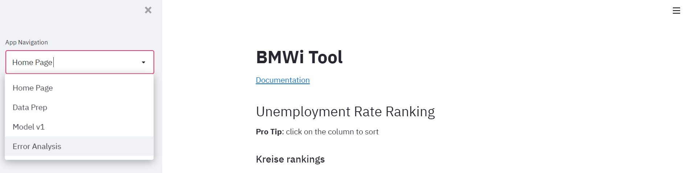
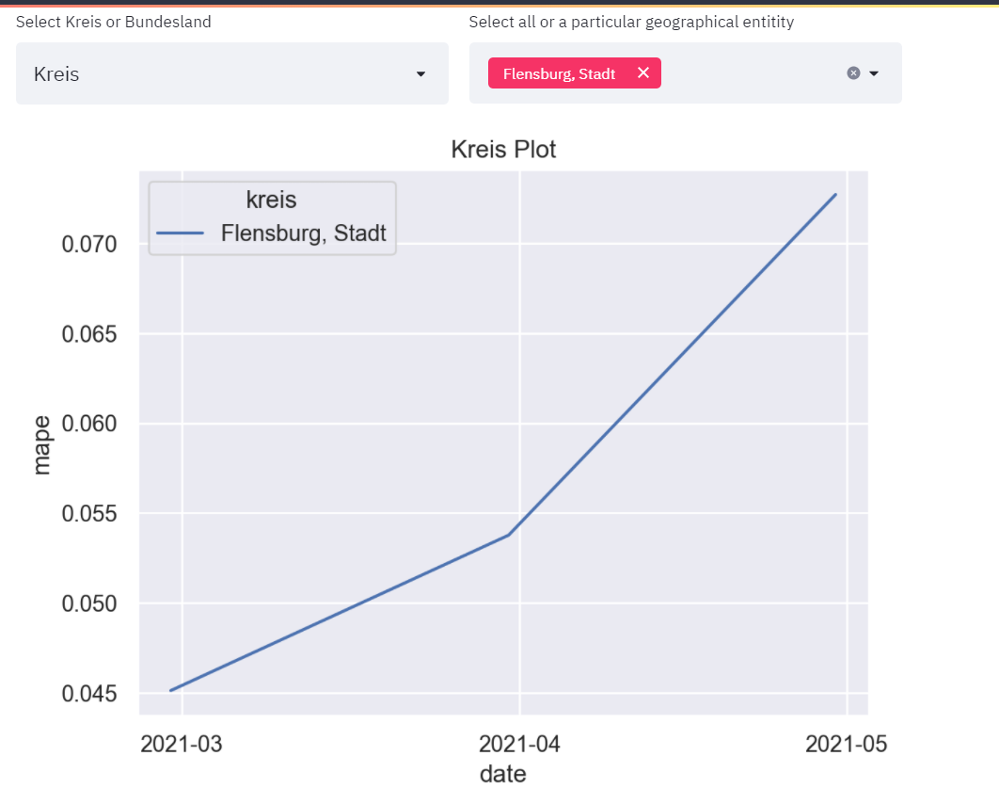
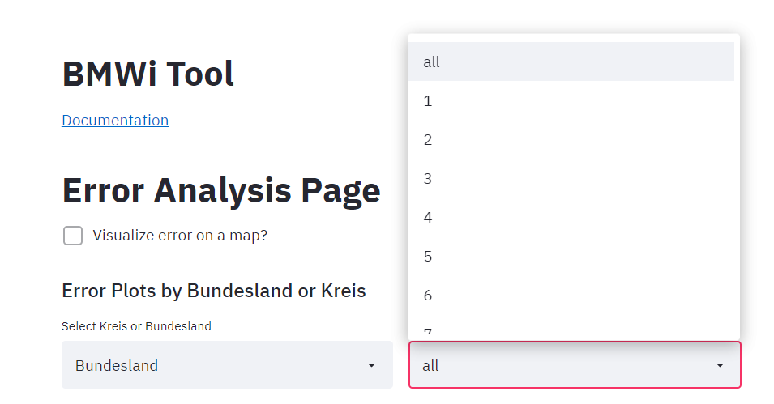
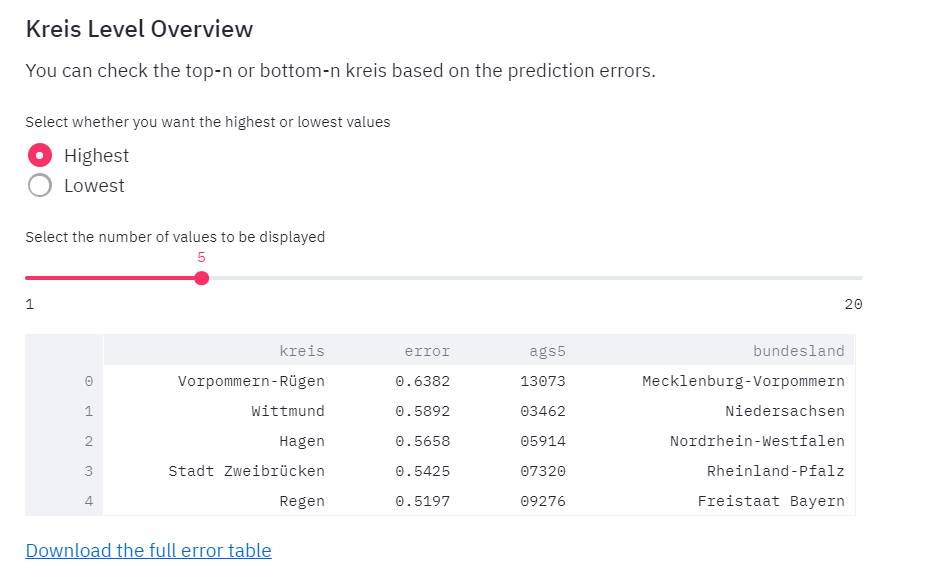
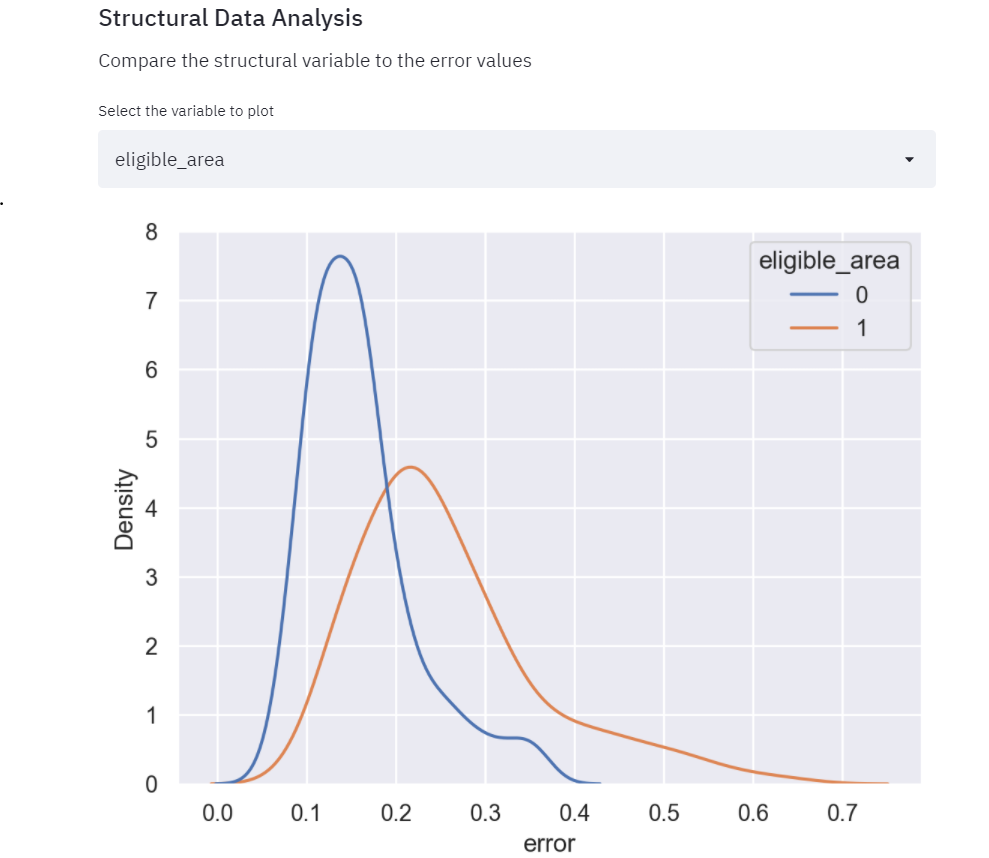
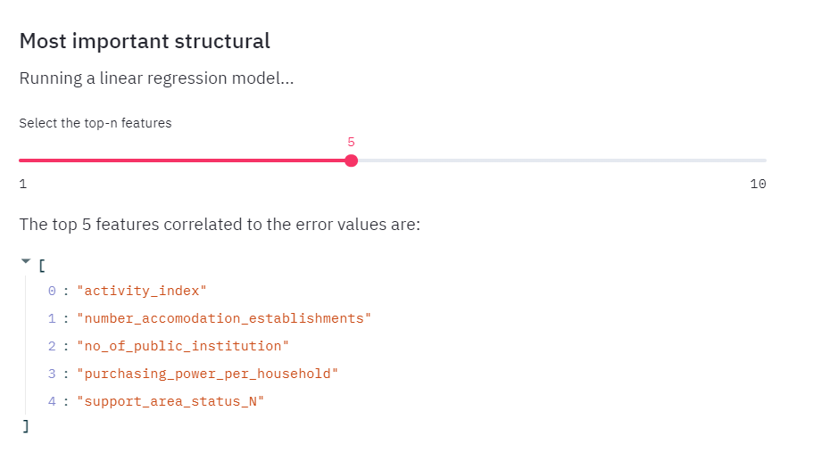

Error Analysis Page
There error analysis is an attempt to see where the unemployment rate predictions “fail”. The errors are Mean absolute percentage errors (MAPE), and each one represent how different the prediction is from the ground truth. The errors can be used to see which kreise were difficult to predict for, potentially suggesting the something spacial happened there. The errors can also be easily compared with the structural data, to identify the type of kreise that are harder to predict for.
Note: To calculate the errors the actual values must be available. Therefore, the errors are calculated for the previous quarter based on the recently uploaded data and, hence, this is a retrospective analysis.
Launching the page
To open the error analysis page, select the 'Error Analysis` Section from the dropdown on the left as can be viewed in the image below.

There are a variety of different plots that can be explored and have been explained in detail below.
Error Plots by Bundesland
This section allows for a kreis-level or bundesland-level analysis. The left dropdown allows selection by Kreis or by Bundesland and the right dropdown allows selection of one or more regions.

Selecting an individual entry would plot the errors for a specific kreis or bundesland. You can select multiple bundesland or kreis. The individual entries can be selected from the right dropdown option.

Kreis Level Overview
The goal of the application is to break down the predictions as well as the errors at the Kreis level. The following section performs error data analysis. It helps in understanding which Kreis are the hardest to estimate for unemployment rate.

This dataframe currently shows 5 kreis based on their unemployment rate forecasting errors for previous quarter.
There are two configuration options here:
- Highest or Lowest: This lets you select the Kreis with the highest or lowest unemployment rate prediction errors in the previous quarter.
- Value Slider: This lets you select the number of Kreis to be displayed currently. From UI perspective, the maximum limit is 20
To view all the Kreis, download the complete error table by clicking on the option Download the full error table.
Structural Data Analysis
The next step is to analyze the errors with regards to the structural data and see hot the errors vary with a particular structural variable. Select a structural variable to compare against the errors. (Eg: Errors are compared against eligible_area in this image).
The errors are on the x-axis, so the fatter the curve is the more prone that category is to errors. In the following example, the areas where eligible_area is 0 have smaller errors than areas with code 1. This means that it is easier to predict kreise that are not eligible for funding then kreise that are eligible. This might be because something unique happened in the eligible kreis that the model can’t explain.

Future: Later, we can add a check to see if the variable is a categorical or numerical variable.
Most important Structural Variables
Individual exploration might be interesting but can also be very time consuming. There is an option to get an overview of which features correlate to the errors and therefore explain the variance in the errors well. The features are selected using Sequential Feature Selector, a greedy algorithm that reduces feature dimensions. The features are listed in the order of importance, and there is a provision to choose how many features to show.
For example, if “eligible area” is selected as one of the important features, this means that the errors of the kreise eligible for funding is very different than the errors of thous who are not. This implies that there is something special about these groups, and it’s worth to plot them.
